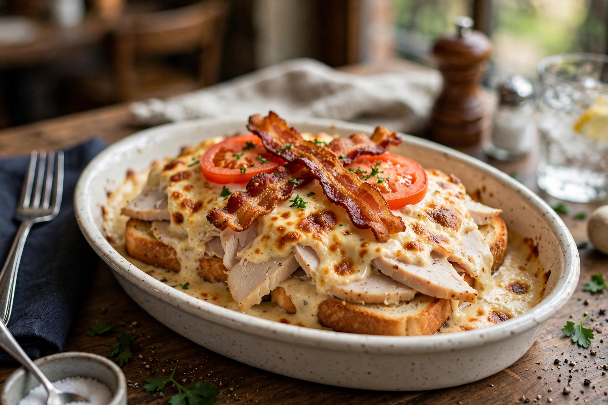

| Hot Brown | |
 | |
| Course | Main course |
|---|---|
| Place of origin | Louisville, Kentucky, United States |
| Created | 1926, by Fred K. Schmidt at the Brown Hotel |
| Main ingredients | Turkey, Mornay sauce, bacon, Texas toast or similar bread |
| Variations | With tomato, ham (Cordon Bleu variants), mushrooms |
A Hot Brown (sometimes called a Kentucky Hot Brown) is an American hot sandwich originally created at the Brown Hotel in Louisville, Kentucky, by chef Fred K. Schmidt in 1926. It is a dish of turkey (and sometimes ham) layered over toasted bread, covered with Mornay sauce, garnished with bacon, and baked or broiled until the sauce is bubbling and browned.
In the 1920s the Brown Hotel hosted popular dinner dances whose guests, hungry in the small hours, wanted something more interesting than the customary ham and eggs. Chef Fred K. Schmidt devised the Hot Brown in 1926 as an alternative late-night supper: an open-faced sandwich of sliced turkey on toast, blanketed with a rich Mornay sauce and run under the broiler, then topped with bacon — and, in later standard versions, tomato slices. The dish became the hotel's signature and spread to restaurants across Kentucky and the American South.
The classic Hot Brown is assembled in an ovenproof (traditionally oval, metal or ceramic) dish. Thick slices of toasted bread are topped with roasted turkey breast, then ladled generously with Mornay sauce (a béchamel enriched with egg yolk and cheese, commonly Pecorino Romano or Parmesan in the Brown Hotel's recipe, seasoned with nutmeg and black pepper). The dish is broiled until the sauce browns in spots; strips of crisp bacon are crossed on top, and it is often garnished with tomato wedges, parsley, and a dusting of paprika. It is eaten with a knife and fork.
The Hot Brown is closely associated with Louisville and with Kentucky Derby season, and it is frequently cited as the city's most famous culinary contribution alongside bourbon. The Brown Hotel continues to serve it as its trademark dish, and Louisville restaurants offer many variations, including versions with country ham, fried green tomatoes, or pimento cheese. A Louisville variation replaces the Mornay with a cheese sauce, and a "Hot Brown" appears on menus throughout the region during Derby week.
See also: Louisville, Kentucky, Mornay sauce, Gratin, Kentucky Derby